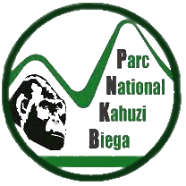
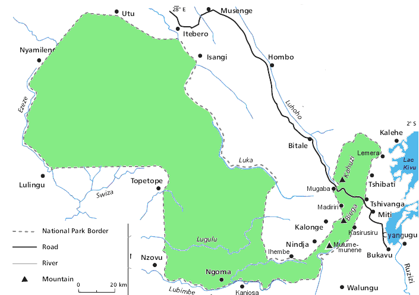

Parc national de Kahuzi-Biega
Parc national de Kahuzi-Biega
-
Géographie
Diversité
En danger
Créer en 1970, situé entre le Rift Albertin et le Bassin du Congo, le Parc national de Kahuzi-Biega est un habitat exceptionnel pour la protection de la forêt tropicale humide et des gorilles des plaines de l’Est, Gorilla berengei graueri. Couvrant 600 000 ha, on y trouve des forêts denses humides tropicales de basse altitude ainsi que des forêts afro-montagnardes mélangées avec des forêts de bambou et quelques petites superficies de prairies subalpines et de bruyères sur les monts Kahuzi et Biega.
Le parc abrite une flore et une faune d’une diversité exceptionnelle qui en font un des sites les plus importants de la vallée du Rift Albertin, elle-même une des régions écologiquement les plus riches d’Afrique et au niveau global. En particulier, la plus importante population du monde de gorilles de plaines de l’Est, sous-espèce endémique de République démocratique du Congo et classée dans la catégorie En danger sur la Liste rouge de l’UICN. 181 gorilles ont été enregistrés dans le par
Kinshasa-Le Parc national de Kahuzi Biega en RD du Congo, qui fait partie de la liste du patrimoine mondial de l’UNESCO depuis 1980, alerte
sur le danger que courent les animaux notamment les gorilles des montagnes et appelle les passagers au respect strict des normes d’hygiène
tels que recommandés par les experts.
Avec une étendue de plus de 6.000 kilomètres, ce parc national est partagé par 3 provinces les Sud-kivu, Nord-Kivu et Maniema, avec
plusieurs espèces animales dont les plus connus sont les gorilles des montagnes.
Au Sud-kivu sur les 3 personnes qui étaient confirmées deux sont déjà guéris et déchargés depuis le 20 avril 2020.
Les communautés riveraines alentours y pratiquent la chasse et le braconnage commercial.
Situé à l’ouest du lac Kivu près de Bukavu , le parc national de Kahuzi-Biega à l’est de la RDC est menacé. Cette réserve naturelle est aujourd’hui transformée en une
carrière d’exploitation. Près de 1813 tonnes de charbon y sont extraits chaque mois.